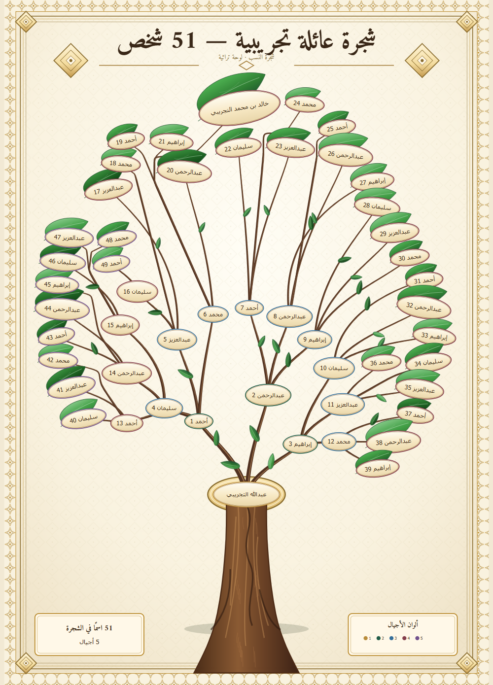

جولة ثلاثية الأبعاد
ابحث عن اسم، واتبع خط النسب، ولوّن الأسماء حسب القرابة أو الجيل أو الجنس. عينات من ٥٠ و١٥٠ و٥٠٠ شخص.
استكشف الشجرةنسخة مراجعة · بيانات وهمية
استكشف النسب في جولة ثلاثية الأبعاد، وجرّب بوابة العائلة، وراجع اللوحة التراثية المعدّة للطباعة.

ابحث عن اسم، واتبع خط النسب، ولوّن الأسماء حسب القرابة أو الجيل أو الجنس. عينات من ٥٠ و١٥٠ و٥٠٠ شخص.
استكشف الشجرةجرّب الحسابات والدعوات، وعرض الفرع، والإضافة ومعاينة التعديلات على بيانات وهمية.
افتح البوابة التجريبيةمعاينة القوالب والتعديل والاستيراد وخيارات إخراج اللوحات.
افتح محرّر الشجرةمعاينة التاج التراثي المزخرف · بروفة A2 من صفحة واحدة
لوحة واحدة بتاج عضوي، مع البحث وتتبع النسب.
تجربة اللوحة ↗أربع لوحات مترابطة مع فهرس. بروفة A2 من أربع صفحات.
افتح لوحات الفروع ↗بروفة PDF١٤ لوحة للفروع. افتح الفهرس وانتقل بين صفحات المتابعة.
افتح لوحات الفروع ↗يضم المستودع أحدث كود للجولة والبوابة واللوحة. تتوفر أيضًا حزمة اللوحة v3 التاريخية للمقارنة.
نتائج عينة v3 · نتائج لوحات الفروع من v2
عند إرسال ملاحظة، اذكر حجم العينة ورقم الصفحة أو الاسم، وما ظهر لك وما توقّعته.